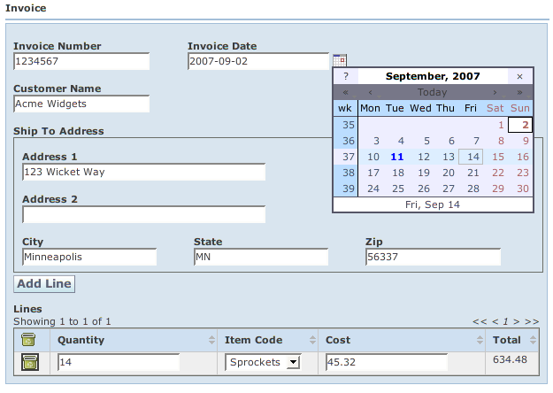

Back: EnumeratedTypes Next: CreatingYourOwnFieldTypes
You may encounter times when you need to manage Lists of nested beans. By default, WWB displays Lists in an editable table. Let's look at an example: wicket.contrib.webbeans.examples.tables.TableBeanPage:
Embed:wicket.contrib.webbeans.examples.tables.TableBeanPage
This page references two beans wicket.contrib.webbeans.examples.tables.Invoice and wicket.contrib.webbeans.examples.tables.InvoiceLine - the typical invoice pattern. If you look at InvoiceLine, you'll see that it uses a couple of features we talked about previously: enums and PropertyChangeEvents. The enum is for the itemCode and the PropertyChangeEvents cause the total to be updated when either the quantity or cost change.
# Table Bean Example
Invoice {
props: invoiceNumber, invoiceDate, EMPTY, customerName,
shipToAddress{colspan: 3},
action.addLine{colspan: 3},
lines{colspan: 3};
}
InvoiceLine {
props: action.removeLine{labelImage: "remove.gif"},
quantity, itemCode, cost, total;
}
Address {
props: address1{colspan: 3}, address2{colspan: 3}, city, state, zip;
}
You'll note a couple of new things here. First, the pseudo-property "EMPTY". In the BeanGridPanel (the default layout for BeanForm), EMPTY consumes a blank cell in the grid. Second, the "action.removeLine" action specifies a "labelImage" parameter. This allows you to display an image in place of a text label. Also note that Invoice has an addLine action that will add a line to the invoice. InvoiceLine has a removeLine action that will remove a line from the table.
When you bring up the page, it will look something like:

Of course, you could throw the lines in a separate tab to clean up the page a bit. Note that clicking "Add Line" adds a new line to the table. Clicking the trash can icon on one of the lines will remove the corresponding line.
The screenshot also shows the Invoice Date field with a calendar pop-up displayed. WWB displays properties of java.util.Date (date/time), java.sql.Date (date only), java.sql.Time (time only), java.sql.Timestamp (date/time), and java.util.Calendar (date/time with timezone) in a field with a pop-up calendar button.
Back: EnumeratedTypes Next: CreatingYourOwnFieldTypes